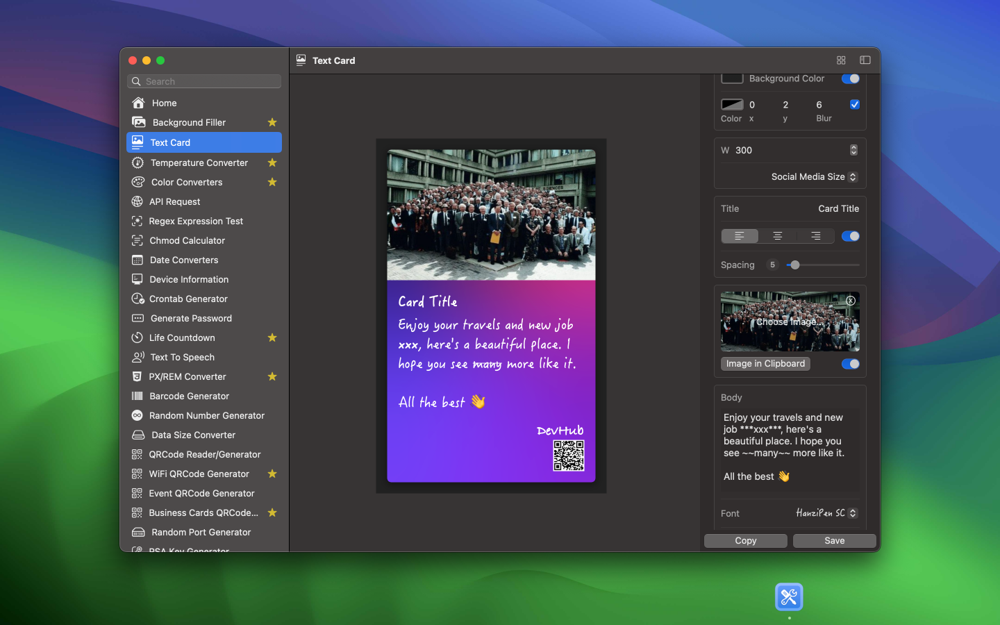
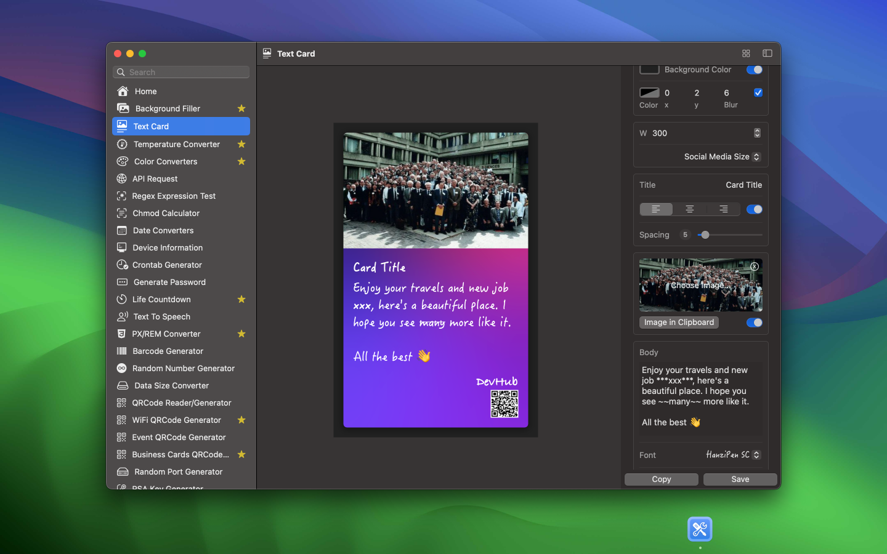
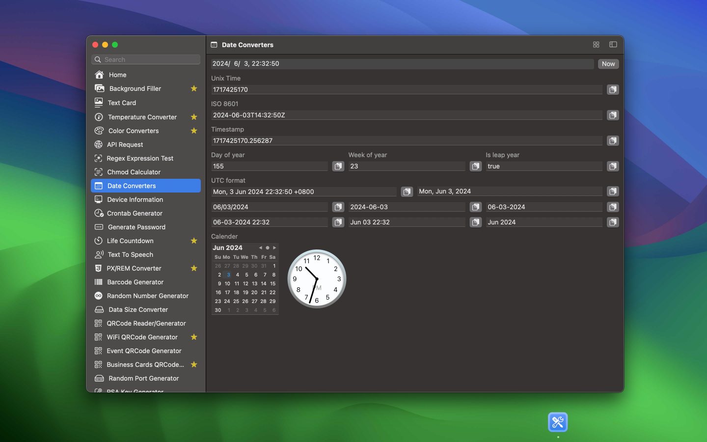
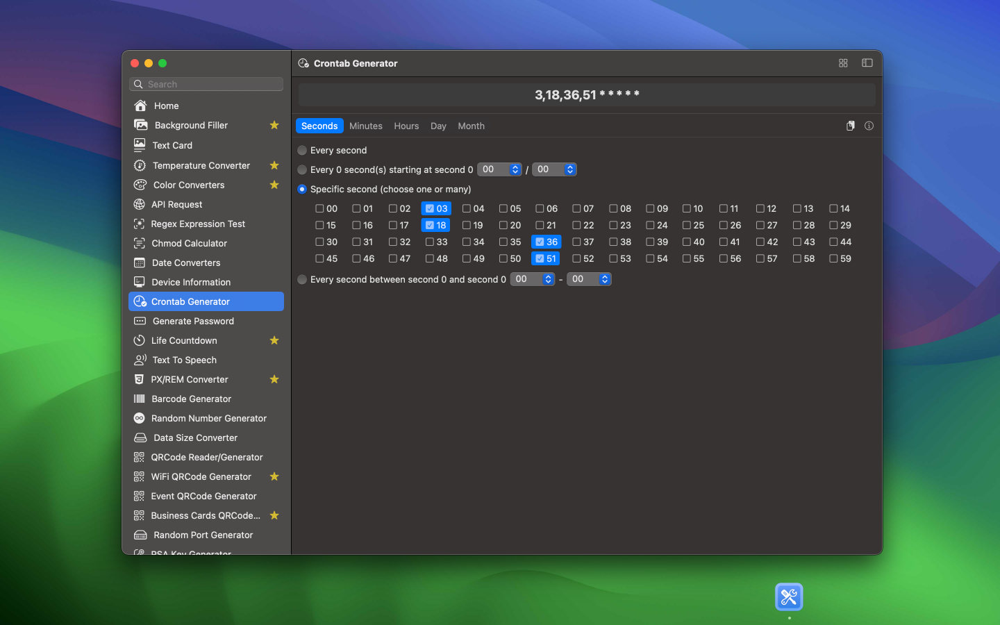
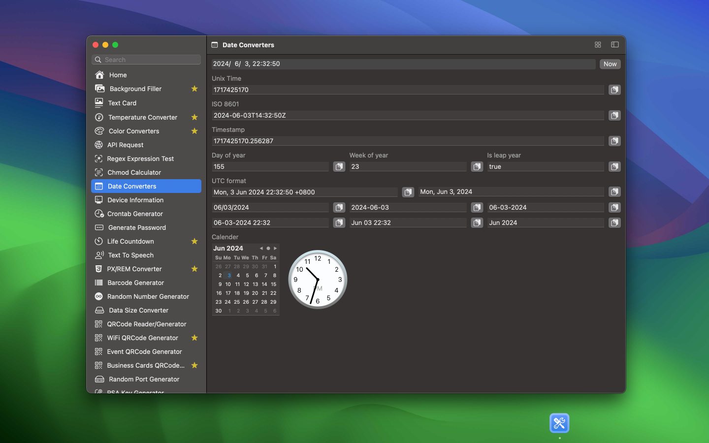
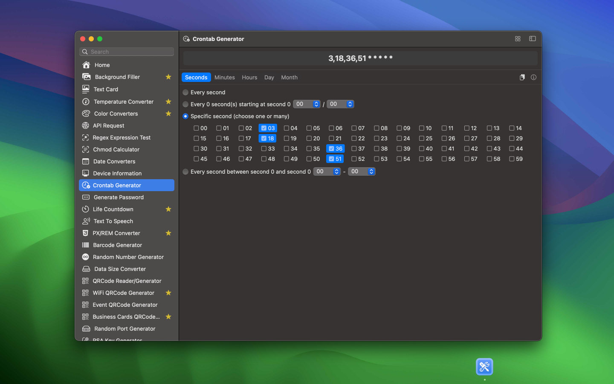

最低OS要件: macOS 14.0
開発者の日常業務をサポートし、データの最高のセキュリティを確保するために慎重に作成された機能豊富なオフラインアプリケーションです。
私は積極的に開発を進めており、毎週更新をリリースするという大胆な目標を掲げています。私はスリムなフットプリントを維持し、100以上のユーティリティを含む広範なコレクションをキュレーションすることを目指しています。これにより、開発者に多様なツールを提供します。この取り組みは、継続的な改善へのコミットメントを反映しており、開発者に豊富なツールを提供します。DevHubは単なるコーディングの仲間ではありません。

以下のツールが完成しています：

 

 



DevHubとの統合はURLスキームを介して行われます。これを使用して、ほとんどのアプリやワークフローと統合できます。例えば、Raycastとの統合：

URLスキーム
DevHubは、URLを介してツールをアクティブにするためのさまざまなコマンドとパラメーターをサポートしています。例えば、次のようにリンク（HTMLページなど）で使用できます：
<a href="devhub://qrCodeEventGenerator">ここをクリック</a>
またはTerminal.app / CLIから：
# Terminal.appまたはbashで入力：
open "devhub://qrCodeEventGenerator"
または、これをブラウザのアドレスバーにコピーしてEnterキーを押します： devhub://qrCodeEventGenerator